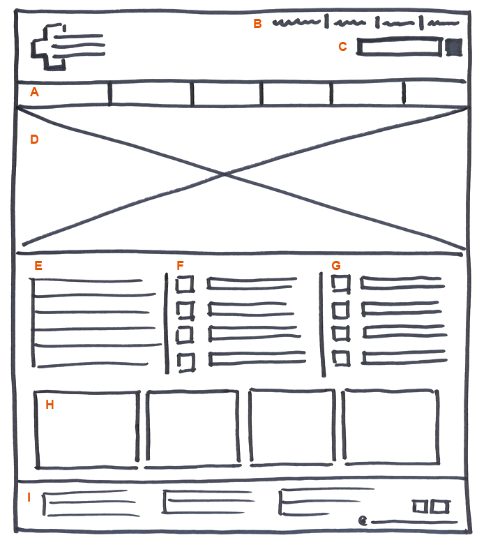

Week 7 Assignment
Use what you've learned about html, css and bootstrap to translate this wireframe to code.

This exercise is meant to further your understanding of the design to code translation.
Work in the week-7-template.html. It already has bootstrap included for you.
Add any custom css to the css directory. Add images to the img directory.
For visual fidelity, aim for a greybox look and feel.
Leverage the bootstrap documentation to pull the code samples you need.
Follow this codecademy class to help you move through the assignment.